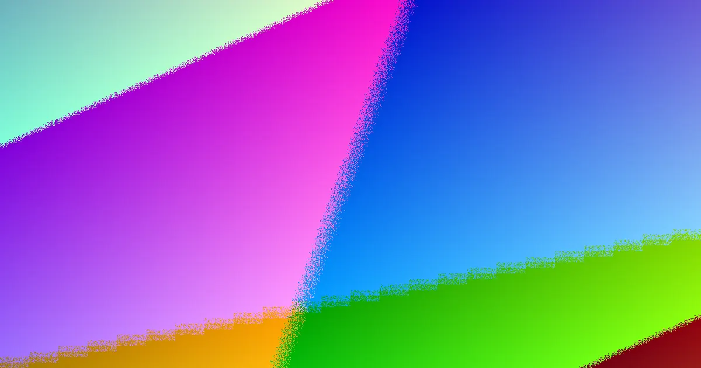

For local buyers, web design adelaide local options compared understanding the practicalities of engaging a local provider
Web Design Adelaide Local Options Compared Explained
When seeking web design in Adelaide, the initial step is to move beyond aesthetic preferences and focus on the functional requirements of your website. What specific business action should your site facilitate? Whether it's generating enquiries, selling products, supporting a marketing campaign, replacing an outdated site, or enabling staff to manage content, defining this purpose is crucial for briefing a developer effectively. The range of services typically offered includes custom builds, small business websites, WordPress development, e-commerce solutions, landing pages, search-optimised sites, and ongoing maintenance plans. Each of these paths influences the project's scope and cost.
A one-page campaign landing page, for instance, represents a different engagement than a full-scale e-commerce store built on platforms like Shopify or WooCommerce. Similarly, a website redesign aimed at preserving existing search engine rankings requires more intricate planning than a brand-new site. It's essential to clarify which business outcomes the primary pages should support, such as direct customer enquiries, online purchases, or appointment bookings. Confirming what is included in the initial build, such as planning, design, development, basic on-page SEO, mobile optimisation, and launch assistance, is vital. Equally important is understanding what falls outside the initial scope, particularly ongoing costs like hosting, domain name renewals, regular maintenance, and marketing efforts.
Budgeting for Your Adelaide Website Project
The published figures suggest that a basic brochure-style website for a small business in Adelaide typically starts in the low thousands. More complex projects, such as custom builds, e-commerce sites, or those requiring booking functionalities, will naturally incur higher costs. It's important to view these figures not as fixed quotes, but as a baseline for comparing proposals. A well-defined quote should clearly itemise the inclusions based on your specific brief, rather than relying solely on a headline price.
For local service, retail, consulting, or professional businesses, a comprehensive quote should detail the number of distinct page types to be designed, whether content structure is included, the chosen development platform, and the extent to which your business can manage routine content updates post-launch. To ensure a fair comparison between different providers, it is advisable to provide each designer with the exact same brief. This should include the anticipated number of pages, whether e-commerce or booking capabilities are required, the necessity of preserving existing search rankings, expectations regarding stock imagery, and who will be responsible for supplying product, service, and location-specific content.
Platform Choices and Website Ownership
The choice of platform significantly impacts how you manage your website after launch. Common options include WordPress, Shopify, WooCommerce, and custom-built solutions. A business requiring frequent content updates might benefit from the user-friendliness of a WordPress site, while an online store necessitates robust product management and a seamless checkout process.
Website ownership is a critical aspect that should be clarified before any financial commitment. In most standard agreements, the business retains ownership of the content, branding, and the finished website once full payment has been made. This understanding should be explicitly stated in the written scope of work, as it can affect future access, editing capabilities, and the ability to migrate the site. It is prudent to ask whether the website, its content, and branding are fully yours after the final payment. Inquire about any conditions associated with plugins, themes, or software licenses that might affect future usage. Furthermore, ascertain what training is provided if your team will be responsible for ongoing updates and what support is available for essential tasks like backups, security, and routine maintenance.
Redesigning vs. New Website Builds
Undertaking a website redesign is more involved than a simple visual refresh, especially if the existing site already generates search traffic or customer enquiries. The process of modernising an underperforming or outdated website without compromising its current search engine visibility introduces technical considerations beyond aesthetics.
Before approving a redesign project, it's crucial to identify the pages that are currently driving value, the types of enquiries they generate, and the content that needs to be preserved or enhanced. Key questions to ask your developer include how they will manage page structure, headings, URLs, implement necessary redirects, handle metadata optimisation, and conduct pre-launch checks. Addressing these points helps safeguard the site's existing performance while improving its outdated elements. For a broader perspective on local search strategies relevant to web design projects, this web design adelaide resource offers another practical comparison point for planning your project brief.
- Define Project Scope. Clearly outline the website's primary function (e.g., lead generation, e-commerce, information) and desired business outcomes.
- Determine Budget. Establish a realistic budget, considering initial build costs and ongoing expenses like hosting and maintenance.
- Select Platform. Choose a development platform (e.g., WordPress, Shopify) that aligns with your content management needs and business type.
- Clarify Inclusions. Ensure all aspects of the build, from design to SEO and launch support, are clearly defined in the written agreement.
- Confirm Ownership. Verify that you will own the website, content, and branding upon full payment.
Web design options in Adelaide for local businesses.